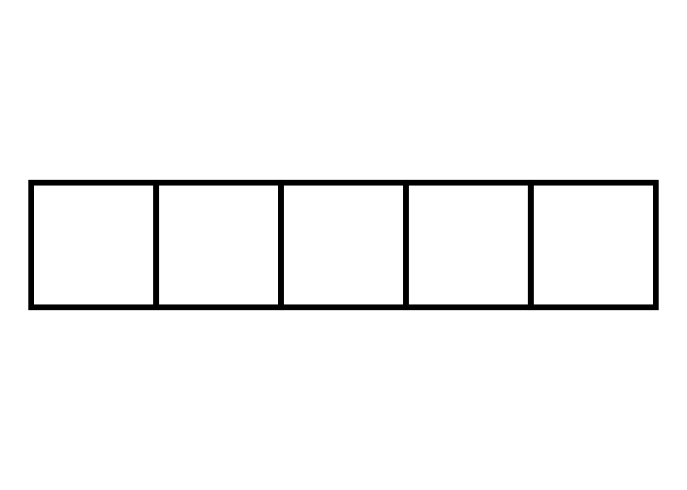

Rows: 279496 Columns: 1
── Column specification ────────────────────────────────────────────────────────
Delimiter: ","
chr (1): words
ℹ Use `spec()` to retrieve the full column specification for this data.
ℹ Specify the column types or set `show_col_types = FALSE` to quiet this message.
Rows: 9884 Columns: 1
── Column specification ────────────────────────────────────────────────────────
Delimiter: ","
chr (1): words
ℹ Use `spec()` to retrieve the full column specification for this data.
ℹ Specify the column types or set `show_col_types = FALSE` to quiet this message.
evalutate_guess<-function(guess, solution){ found=0 letter_match=0 position_match=0for (i in1:length(guess)){for (j in1:length(solution)){if (i==j & guess[i] == solution[j]){print(paste("You letter",guess[i],"is in the right position in the word")) position_match=position_match+1 found = found +1 }elseif (guess[i] == solution[j]){print(paste("You letter",guess[i],"is in the word but not in the right position")) letter_match=letter_match+1 found = found +1 }else { next} } }print(paste("You have guessed ",letter_match+position_match," letters of the word!"))if (length(setdiff(guess, sollution)) ==0){ output =1 }else {output =0}return(output)} check_guess<-function(guess,solution,valid_list){Flag="No"guess_word <-paste(guess, collapse ="")if (is.null(guess)) {print("Empty word! Enter the word!") Flag="No" } elseif (length(guess) !=length(solution)) {print("Enter only the same length words as hidden behind") Flag="No" }elseif (!(guess_word %in% valid_list)){print("Enter the valid words only!") Flag="No" }else { Flag="Yes"}return(Flag)}play_wordle <-function(solution, valid_list, num_guesses=6){print("Welcome to the Wordle game by Madina")print("You have 6 chances to predict the word hidden behind the blocks")print("When you guess right the letter will be present") Flag="No"if (Flag =="No") { enter <-toupper(readline("Type your word, then press <enter>: ")) guess<-unlist(strsplit(enter, split =""))check_guess(guess,solution,valid_list) }if (Flag=="Yes"){evalutate_guess(guess,solution) }}play_wordle(a,valid_list,6)
[1] "Welcome to the Wordle game by Madina"
[1] "You have 6 chances to predict the word hidden behind the blocks"
[1] "When you guess right the letter will be present"
Type your word, then press <enter>:
[1] "Enter only the same length words as hidden behind"
###testenter <-toupper(readline("Type your word, then press <enter>: "))
Type your word, then press <enter>:
guess<-unlist(strsplit(enter, split =""))for (i in guess){print(guess[i])}a
[1] "Y" "A" "C" "H" "T"
setdiff(guess,a)
character(0)
df <-data.frame(x =1:length(a),y =1,letters =rep("",length(a)))# Plot boxes with lettersggplot(df, aes(x = x, y = y, label = letters)) +geom_tile(fill ="white", color ="black", size =2) +# Boxesgeom_text(size =8) +# Letterstheme_void() +# Remove backgroundcoord_fixed()
Warning: Using `size` aesthetic for lines was deprecated in ggplot2 3.4.0.
ℹ Please use `linewidth` instead.

The echo: false option disables the printing of code (only output is displayed).